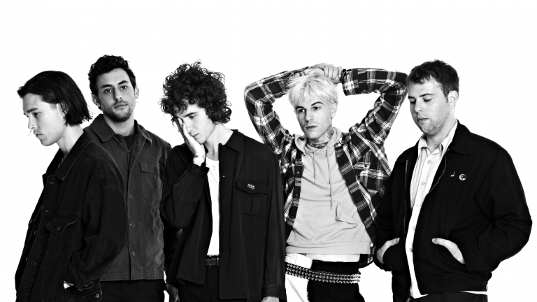

The Neighbourhood
About The NBHD
The Neighbourhood (sometimes rendered as "THE NBHD") is an American rock band formed in Newbury Park, California, in 2011. The band is composed of vocalist Jesse Rutherford, guitarists Jeremy Freedman and Zach Abels, bassist Mikey Margott, and drummer Brandon Alexander Fried. After releasing two EPs, I'm Sorry... and Thank You, The Neighbourhood released its firstfull-length album I Love You. on April 23, 2013, via Columbia Records. The same year, the EP The Love Collection was released; and in November 2014, mixtape titled #000000 & #FFFFFF. A second album, Wiped Out! was released in October 30, 2015. The Hard EP followed in September 2017 and cracked the Billboard 200 as a surprise release. In 2018, the band delivered their third album, the eponymously titled The Neighbourhood, which was anchored by the single "Scary Love". Two more EPs followed, To Imagine and Ever Changing, with all three of their 2018 EPs later compiled into a release called Hard to Imagine the Neighbourhood Ever Changing. The Neighbourhood continued their prolifc streak, returning in 2019 with the acoustic single "Middle of Somewhere."
Best Album - Wiped Out!

California's the Neighbourhood are on a mission to make goth R&B a touchstone in the musical lexicon. It's a sound they championed on their debut album, 2013's I Love You, and continue to explore on their sophomore effort, 2015's Wiped Out! Once again working with producer Justyn Pilbrow, the Neighbourhood expand upon the moody synth, heavy bass, and echoey guitar-based style of I Love You with a collection of tracks that, while not mind-blowing, will pleasingly remind most fans of the group's 2012 breakout track, "Sweater Weather". Lead singer Jesse Rutherford brings a louche, cool-guy vibe to the microphone that combines the delicately melismatic lilt of The Weeknd with the plaintive angst of the Cure's Robert Smith. It's a memorable, if somewhat overly self-conscious stance. One minute, he's crooning self-seriously through fuzzy, echo-chamber effects ("Prey"); the next, he's sitting back, seemingly commanding the listener through pure hip-hop swagger ( "R.I.P. 2 My Youth"). This savvy, cross-genre approach means Wiped Out! will play well next to albums by any number of modern artists from Kanye West to Coldplay. It also doesn't hurt that cuts like "Cry Baby", "Daddy Issues", and "Greetings from Califournia" counteract the band's somewhat downtempo vibe with catchy melodies and light, dance-oriented beats.